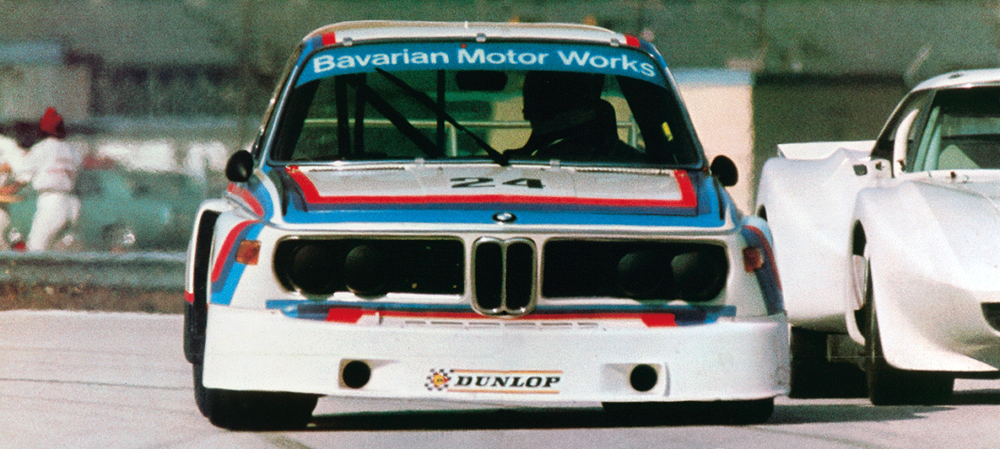
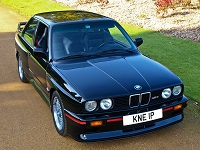

Anii '60 regăsesc marca în plină relansare, după momentele financiare dificile de la finalul anilor '50. Cu „Noua Clasă” (BMW 1500, BMW 1800, BMW 2000 şi diverse versiuni speciale), lansată în 1962, BMW oferă un sedan de familie cu patru portiere care poate oferi şi performanţe sportive respectabile.
În 1964, pilotând un 1800 Ti, Hubert Hahne câştiga 14 din cele 16 curse ale Campionatului German pe Circuit. Doi ani mai târziu, de această dată la volanul unui BMW 2000 Ti, acelaşi Hahne intră în istorie după ce, pentru prima oară coboară sub bariera de 10 minute pe Nürburgring într-o cursă de turisme.

BMW: Bayerische Motoren Werke
Esenţa mărcii BMW se defineşte prin „Plăcerea de a conduce”. Sintagma a fost folosită pentru prima dată în campaniile publicitare din anii '30 şi a devenit sloganul oficial BMW în urmă cu 55 de ani, în 1965. Foarte rar o expresie atât de concentrată reflectă spiritul unei companii atât de clar şi rămâne neschimbată de-a lungul deceniilor. Legătura este cu atât mai fascinantă, cu cât tocmai „bucuria”/ „plăcerea” este cuvântul principal care descrie o companie de tehnologie germană. Aceasta este istoria modului în care BMW şi „Freude am Fahren” au evoluat împreună.
Diviziunea M

BMW M1 din 1978 a fost primul automobil sportiv de la mijlocul anului BMW și a fost dezvoltat în colaborare cu Lamborghini . A fost, de asemenea, prima mașină rutieră produsă de divizia de motorsport a BMW, BMW M. În 1980, divizia M a produs primul model bazat pe un vehicul obișnuit de producție, modelul E12 M535i. Modelul M535i este predecesorul BMW M5, introdus în 1985 pe baza platformei E28. În 1983, BMW a introdus primul său motor diesel, modelul M21. Primul BMW cu tracțiune integrală - E30 325iX - a început producția în 1985, iar în 1987 modelul E30 a fost primul model BMW produs într-un stil de caroserie / vagon . Modelul E32 750i din 1986 a fost primul model V12 al BMW. E32 a fost, de asemenea, primul sedan care a fost disponibil cu un ampatament cu ampatament lung ("iL" sau "Li"). BMW M3 a fost introdus în 1985, bazându-se pe platforma E30 .
Istoria numelui BMW
Numele BMW este o abreviere pentru Bayerische Motoren Werke (pronunția germană: [baɪ̯ʁɪʃə mɔtʰɔʁn̩ vɛɐ̯kə]). Numele german nu este corect din punct de vedere gramatic, deoarece Motorenwerke este un singur cuvânt în limba germană. Termenul Bayerische Motorenwerke (utilizat în trecut în mai multe publicații și anunțuri germane) traduce în limba engleză ca Bavarian Motor Works , care a fost utilizat de BMW pentru comercializarea produselor în țările vorbitoare de limbă engleză. Sufixul AG, scurt pentru Aktiengesellschaft, semnifică o entitate încorporată care este deținută de acționari. Sigla circulară albă și albă BMW sau rotunda a evoluat din logo-ul circular al companiei Rapp Motorenwerke, din care a crescut compania BMW, combinată cu culorile albastre și albe ale drapelului Bavariei. Logo-ul BMW folosit încă astăzi a fost creat în 1917, deși cu diferite modificări minore ale stilului. Originea logo-ului este adesea considerată a fi o reprezentare a mișcării unei elice de aeronave, cu lamele albe tăind printr-un cer albastru. Totuși, acest portret a fost folosit pentru prima dată într-o publicitate BMW în 1929 - la douăsprezece ani după crearea logo-ului - deci nu este originea emblemei în sine.